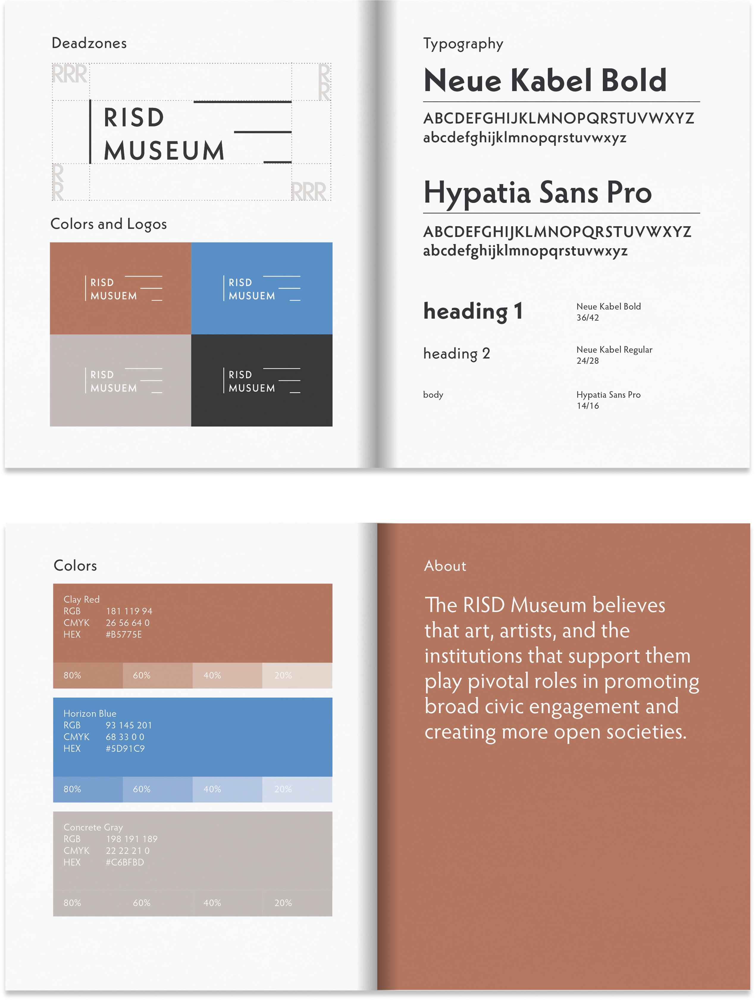

RISD Museum Identity
Design Studio IV
RISD 2024 Spring
Instructed by: Hammett Nurosi
RISD 2024 Spring
Instructed by: Hammett Nurosi
A rebranding project for the RISD Museum, featuring a versatile logo and color system inspired by the museum’s architecture. The new identity reflects its structural forms and spatial experience.
